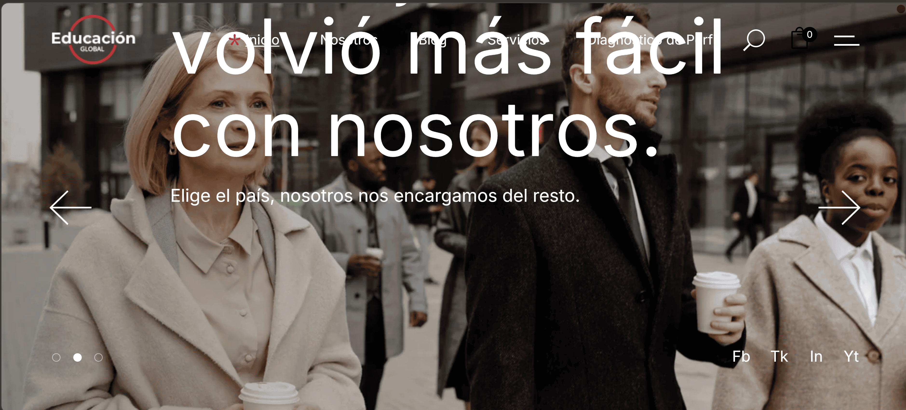
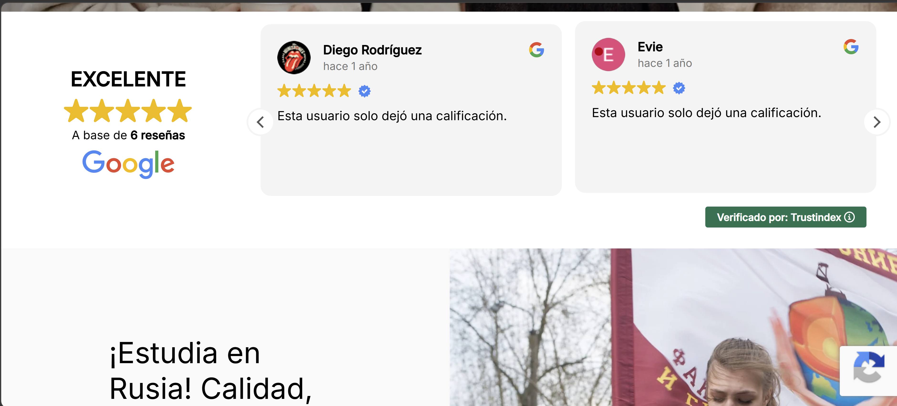
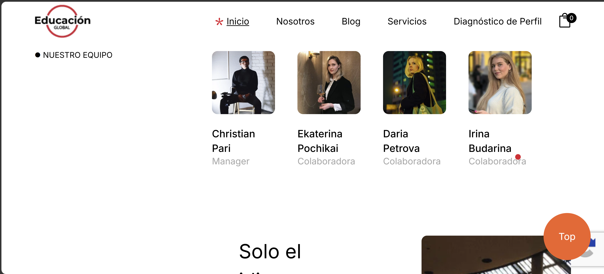

Project Overview
Educación Global is a WordPress-based educational platform focused on international certification, institutional accreditation, and academic collaboration between global education centers. The goal was to present a professional, trustworthy, and structured digital presence.
Visit WebsiteYour Role
I contributed to developing a responsive WordPress layout with structured sections, clean UI design, and improved content hierarchy to enhance readability and credibility for institutional visitors.
Key Features
- Institutional-style WordPress landing structure
- Certification and accreditation presentation system
- Multi-section content architecture (About, Certification, Partners)
- Responsive layout for desktop and mobile users
- Trust-focused UI design for educational credibility
Tech Stack
Challenges & Solutions
The main challenge was structuring complex institutional content in a way that remains clear and trustworthy. I solved this by implementing a strong visual hierarchy, spacing system, and section-based layout to improve readability and engagement.
Visual Preview


Results & Impact
The redesign improved clarity, institutional trust, and content accessibility, helping present the platform as a structured international education and certification network.